地政学
南京は長江下流の渡河点にあり、華東の内陸交通と上海方面の海への道をつなぎます。王朝と近代国家の首都経験を持ち、軍事、行政、教育、追悼の記憶が重なるため、単なる省都以上の重みを帯びます。川が軸です。

🇨🇳 中国 / 江蘇省 / World City Atlas
長江下流の要衝に広がる歴史都市です。明の城壁、旧首都の制度記憶、南京大虐殺の追悼、大学と研究、電子産業、港湾物流、塩水鴨、紫金山の緑が、近代中国の重い時間と現在の産業都市を結びます。
都市の骨格
南京は、長江下流の交通、明代の都市構造、近代国家の首都経験、戦争の記憶、大学研究、電子製造、港湾物流が同じ市街地で重なる都市です。
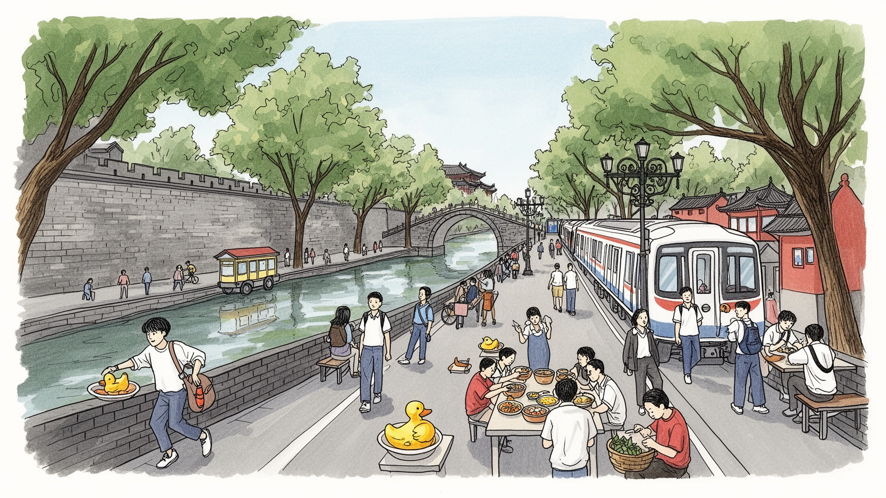
南京は長江下流の渡河点にあり、華東の内陸交通と上海方面の海への道をつなぎます。王朝と近代国家の首都経験を持ち、軍事、行政、教育、追悼の記憶が重なるため、単なる省都以上の重みを帯びます。川が軸です。
電子、ソフトウェア、石化、自動車部品、研究開発、港湾物流、大学関連の仕事が雇用を支えます。研究者と工場、倉庫、配送、外食の働き手が同じ都市圏で暮らし、長江沿いの産業力をつくります。研究も現場も近いです。
城壁、夫子廟、秦淮河、寺院、教会、大学文化、民国建築が南京の厚みを作ります。信仰と学問、追悼と観光が近くにあり、春節の参拝や秦淮の灯りも静かに考える時間を求めます。水辺も祈りも残ります。家族も集まります。
旅行者は城壁、紫金山、秦淮河、博物館を巡り、住民は暑い夏、住宅価格、地下鉄通勤、教育競争、洪水リスクと向き合います。子どもの声、塩水鴨、サッカー観戦、夜の買い物、並木の雨音に、日常の南京が残ります。
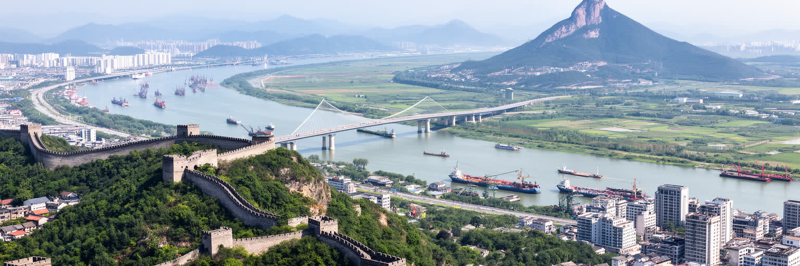
南京を読む入口は、長江下流の大きな屈曲と渡河点です。川は市街地の北西をゆったり流れ、江北と江南、内陸と海、北京方面と上海方面を結ぶ境界であり通路でもあります。古い城壁の内側だけを見れば南京は歴史都市に映りますが、実際の都市圏は長江大橋、鉄道、港湾、工業団地、地下鉄によって川をまたいで広がっています。長江は物資の道であり、軍事上の防衛線であり、洪水を運ぶ自然の力でもありました。渡れる場所を押さえることは、華東の政治と物流を押さえることにつながり、その地理が南京を何度も首都や要衝にしてきました。紫金山や玄武湖は市街地に緑と水の輪郭を与え、城壁沿いや湖畔では朝のランニング、太極拳、子どもの自転車練習が見られます。川に近い低地では排水と堤防が生活の条件になり、対岸の新区開発は通勤圏と住宅市場を変えます。南京の落ち着いた古都の表情は、長江のスケールを背景にして初めて理解できます。川は都市を美しく見せるだけでなく、橋を架け、岸を固め、倉庫を置き、人の移動を調整する実務の場です。夕暮れの河岸から市街地を眺めると、南京が内陸と海をつなぐ中国の川の首都の一つであることが見えます。水辺の遊歩道や工場の岸壁は、同じ川を別々の速度で使う場所であり、住民は景観、通勤、仕事、防災を通じて長江と毎日向き合っています。その距離感が都市を絶えず鍛えています。
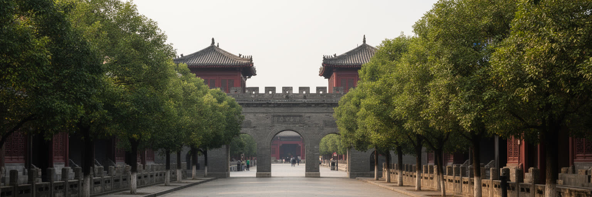
南京の都市景観には、首都であった時間が厚く残っています。明初の都として築かれた巨大な城壁は、都市を囲む防御施設であると同時に、現在の市街地に歴史の輪郭を与える公共空間になりました。近代には中華民国の首都として総統府、官庁、大学、外交施設、住宅地が整えられ、並木道や民国期の建築が政治の記憶を今も伝えます。北京が現在の首都であり、上海が経済の強い象徴であるため、南京の役割はしばしば静かに見えます。しかしこの都市には、王朝国家と近代国家の制度が交差した経験があり、教科書的な歴史より複雑な時間が街路に残ります。首都の記憶は誇りだけではありません。政権交代、戦争、避難、接収、再利用を通じて、建物の意味は何度も変わりました。観光客が民国建築を美しいレトロな風景として見るとき、その背後には外交、軍事、官僚制、近代教育、都市計画をめぐる緊張があります。南京の旧首都性は、過去を飾る看板ではなく、現代中国が近代の記憶をどう扱うかを映す都市の資料です。城壁の上を歩き、総統府の庭を抜け、大学街の古い建物を見ると、権力の中心であった都市が省都として生き続ける複雑さが見えてきます。保存された建物は記念写真の背景にとどまらず、行政施設、学校、博物館、ホテルへ転用され、都市が過去を日常の機能へ編み直す方法を示しています。その手つきに南京の慎重さがあります。
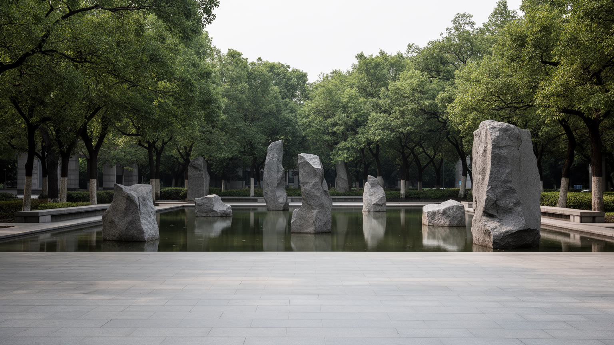
南京を語るうえで、南京大虐殺の記憶を避けることはできません。追悼施設や資料館は、犠牲者を悼み、戦争が市民の身体と生活をどのように破壊したのかを伝える場所です。ここで大切なのは、数字や政治的な言葉だけで記憶を扱わず、家族、名前、避難、恐怖、証言、遺骨、沈黙の重みを受け止める姿勢です。南京の街は現在、地下鉄や大学、商業施設で日常が満ちていますが、その日常の下には、一九三七年の暴力を記憶する層が残ります。追悼は観光の一部にもなりますが、消費の速度で通過してよい場所ではありません。学校教育、外交関係、地元メディアの報道、日中関係の緊張は、記憶の扱いに強い影響を与えます。それでも、都市にとって追悼は国家的な語りに回収されるだけでなく、亡くなった人を人として考え、同じ暴力を繰り返さないための公共的な時間です。訪れる側は写真を撮る前に、展示の言葉と空間の沈黙に向き合う必要があります。館内では声を落とし、献花や黙とうの作法を尊重することが大切です。南京の現代性は、高層ビルや研究開発だけでなく、重い過去を街の中に置き続ける力にも表れます。記憶を尊重して歩くことが、この都市を理解する最低限の作法になります。追悼の場所から少し離れると普通の店や住宅が並びます。その近さは、悲劇が抽象的な歴史ではなく、暮らしのあった街で起きた出来事だったことを静かに思い出させます。静かな歩幅が求められる場所です。
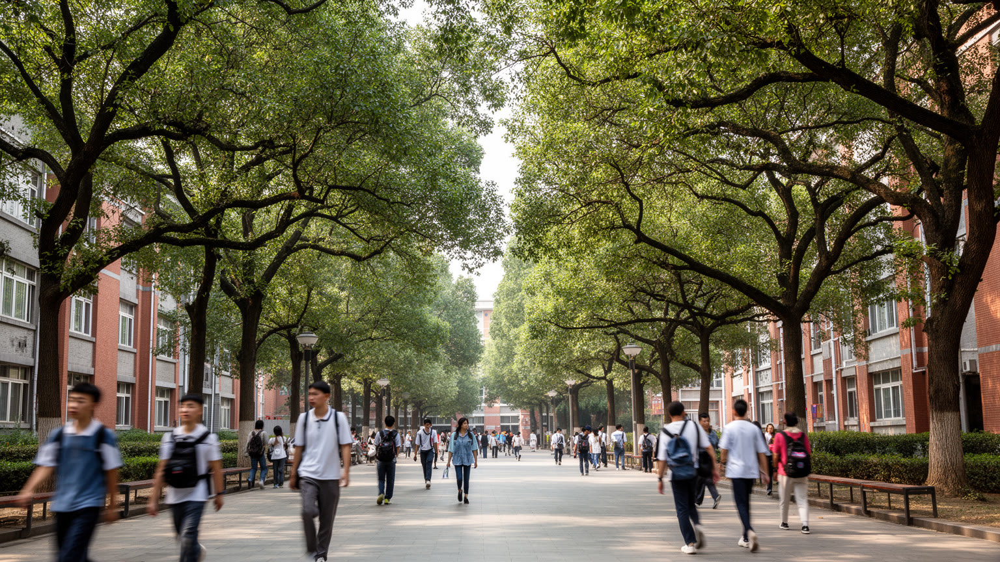
南京は中国有数の大学都市でもあります。南京大学、東南大学、南京理工大学、南京航空航天大学をはじめ、多くの高等教育機関が集まり、学生、研究者、技術者、出版、医療、実験施設、起業支援を都市の内部に厚く蓄積しています。古いキャンパスの並木道や図書館は落ち着いた知的景観をつくりますが、その背後では入試競争、研究費、論文評価、就職、住宅費が学生と教員を強く動かします。大学は南京の旧首都性や文化的な評判を支えるだけでなく、電子、ソフトウェア、材料、医療、航空宇宙、環境工学などの産業へ人材を供給します。研究室の成果は企業の開発部門、政府の政策、病院、スタートアップに流れ、都市の経済を静かに押し上げます。一方で、大学街が商業化すれば、安い食堂や書店、小さな下宿、学生の居場所は失われやすいです。南京の教育都市としての価値は、名門校の看板だけにあるのではなく、若者が議論し、読書し、専門を深め、社会へ出ていく過程を都市が支えている点にあります。朝の地下鉄で通う学生、夜遅くまで明かりの残る研究棟、校庭のバスケットボールや卓球台、古本屋の棚、SNSで流れる講演告知を見れば、南京が学ぶ都市として動いていることが分かります。卒業生の多くは上海や深圳へ向かいますが、南京に残る人材も多いです。その選択を支える研究職、医療、文化産業、住みやすい街路が、都市の厚みを保っています。学生の声も都市資産です。
南京の経済は、歴史観光だけでなく、電子、ソフトウェア、自動車部品、石油化学、スマート製造、環境技術、サービス産業によって支えられています。江寧、浦口、栖霞などの開発区には研究開発拠点、工場、物流施設、住宅地が集まり、大学から出た人材と周辺地域から来る労働者が同じ産業圏を作ります。電子産業は設計、部品調達、組み立て、検査、ソフトウェア、保守、営業を必要とし、きれいな研究棟だけでなく、交代勤務の現場、倉庫、食堂、通勤バスにも支えられます。南京は上海や蘇州に近い華東の供給網に組み込まれつつ、長江沿いの土地と大学資源を使って独自の位置を保ちます。産業集積は高い雇用を広げますが、景気変動、外需、環境規制、下請けの賃金、若者の競争も都市へ持ち込みます。石化や重工業の歴史は環境負荷の記憶を伴い、新しい技術産業はクリーンなイメージだけでは語れません。南京の産業力は、旧首都の文化的な顔と並んで、現代の実務的な基盤です。工場の門、研究棟の窓、夜の配送車を同時に見ると、この都市が記憶の街であると同時に、華東の製造と研究を担う働く都市であることが伝わります。技術者の会議室と作業員の更衣室は遠く見えても、同じ納期と市場に結ばれています。その関係を見れば、南京の成長が知識と現場労働の両方に依存していることが分かります。ここに産業都市の現実があります。
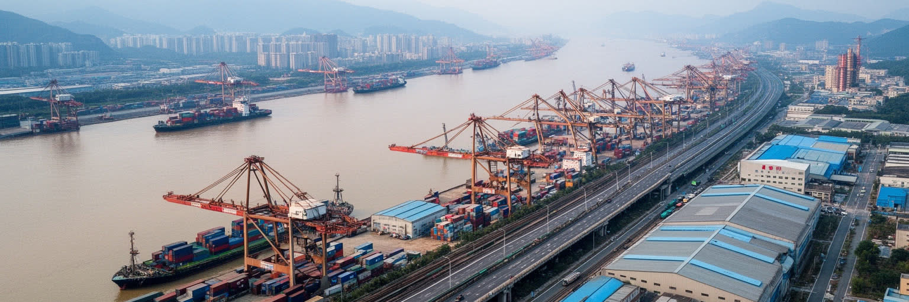
南京港は、海に面していない都市が広域物流の要になる仕組みをよく示しています。長江を下れば上海方面の海港へつながり、上流へ向かえば安徽、江西、湖北、四川方面の工業地帯や消費地と結ばれます。コンテナ、鉄鋼、化学品、機械、農産物、建材は、岸壁、倉庫、鉄道、トラック、税関、情報システムを通じて動き、南京の産業を外の市場と接続します。港湾は華やかな観光名所ではありませんが、都市の収入と雇用を支える不可欠な基盤です。クレーンを動かす人、船員、通関業者、運転手、整備士、警備、事務、食堂の働き手が物流の時間を守ります。長江の水位、霧、台風後の増水、航路の管理、環境規制は、日々の運行に影響します。港が発展すれば、周辺には工業団地や住宅が広がりますが、騒音、大気、水質、危険物輸送の管理も重要になります。南京の川岸を読むと、長江が風景である前に経済の動脈であることが分かります。高速鉄道や地下鉄の都市イメージの下で、重い貨物を動かす港湾労働が都市の実体を支えています。橋の上から見える船列は、内陸中国と世界市場が南京を通ってつながる静かな証拠です。物流の強さは、港の外側にも表れます。倉庫街の食堂、夜間のトラック、修理工場、河岸の監視設備、無線連絡の声まで含めて、南京の経済は川沿いの目立たない作業に支えられています。荷動きは都市の確かな脈拍です。
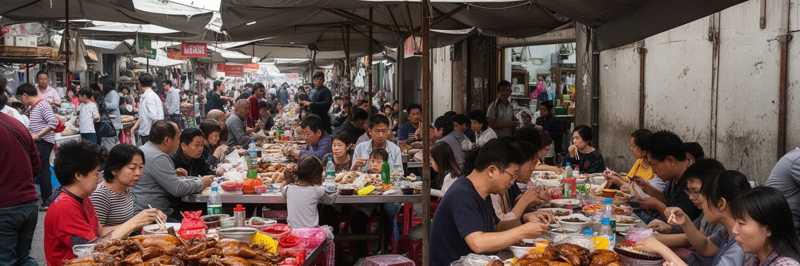
南京の食文化を代表する味の一つが塩水鴨です。淡い塩味、香辛料、しっとりした肉質は、派手な辛さではなく、長江下流の暮らしに合う落ち着いた味として親しまれてきました。市場の惣菜店、老舗の食堂、家庭の食卓、贈答用の箱、駅や空港の土産物が、同じ料理を違う場面へ運びます。南京の食は鴨だけではありません。秦淮河周辺の小吃、鴨血粉絲湯、湯包、麺、朝食の屋台、学生街の安い食堂が、観光と日常をつないでいます。厨房では仕込み、解体、火加減、衛生管理、配達、深夜の片づけがあり、食の魅力は多くの手仕事に支えられます。夜になると夫子廟や路地の屋台に甘い湯気、油、香辛料の匂いが広がり、露店、配達員、観光客、子ども連れが同じ光の中を行き交います。観光地では名物が写真向けに整えられがちですが、住民にとって重要なのは味、値段、近さ、家族の記憶です。塩水鴨は都市の象徴であると同時に、南京の生活が穏やかな積み重ねによって成立していることを教えます。市場の朝、大学近くの食堂、新街口の買い物帰り、帰省の土産を買う売り場を歩くと、食が歴史都市を現在の生活へ引き戻す役割を果たしていることが分かります。南京を味わうことは、名所の間を移動するだけでなく、住民が毎日どこで買い、どこで食べ、誰と分け合うのかを見ることでもあります。名物料理は都市を宣伝する商品である前に、帰ってきた人が南京を感じ直す合図になっています。香りも記憶です。
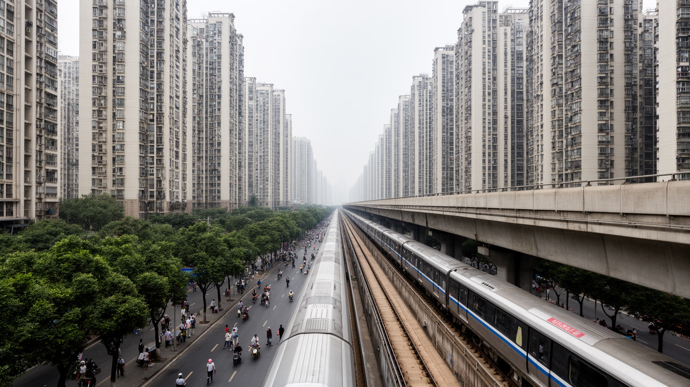
南京の暮らしは、地下鉄網と高層住宅の拡大によって大きく変わっています。城壁内外の古い市街地に加え、江北新区、江寧、仙林、河西などの住宅地と業務地区が成長し、通勤の距離は長くなりました。地下鉄は大学、オフィス、新街口の商業施設、駅、空港方面を結び、車に頼らない移動の骨格を作りますが、朝夕の混雑、乗り換え、駅から住まいまでの距離は住民の疲労を左右します。新しいマンションは便利で清潔ですが、住宅価格、ローン、学区、管理費、保育、親の介護をめぐる負担を家族に背負わせます。古い路地や単位住宅は再開発で姿を変え、安い食堂や小商店、近所づきあいが薄れる場所もあります。地下鉄の案内音、電動バイクの走行音、プラタナスの葉を打つ雨は、通勤の南京をよく表します。住みやすさは、都市の歴史や緑だけでは決まりません。働く人が職場へ通え、子どもを育て、高齢者が近所で買物できる距離を保てるかが重要です。地下鉄の地図を見れば、南京が城壁の内側から広域の生活都市へ変わったことが分かります。駅前の新しい街と古い街路の間で、住民は毎日、自分に合う都市の距離を選び直しています。郊外の新居は広さを与えますが、祖父母の助けや古い友人から離れることもあります。住まいの選択は、家族の時間、教育、老後の支えを組み替える都市の論点です。駅までの道も暮らしです。
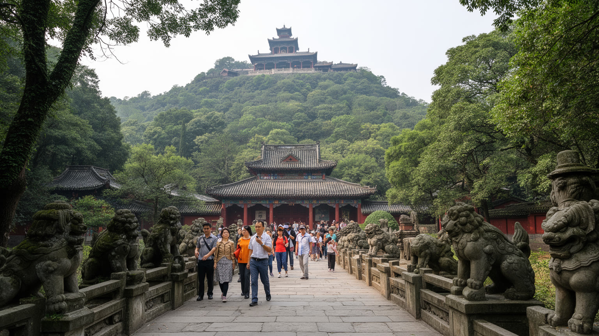
南京観光の重心は、秦淮河や夫子廟のにぎわいだけではありません。市街地の東に広がる紫金山は、中山陵、明孝陵、霊谷寺、天文台、森林公園を抱え、歴史、追悼、自然、散策を一つの山の中で結びつけています。明孝陵は王朝の権威と陵墓景観を伝え、中山陵は近代国家の記憶を象徴し、山道と並木は住民に日常の逃げ場を与えます。観光客は史跡を巡り、家族連れは緑の中で休日を過ごし、学生や高齢者は散歩や登山で身体を動かします。夕方の秦淮河では灯り、遊覧船、街頭演奏、土産物店、夜食の匂いが重なり、静かな古都とは別の表情が出ます。紫金山の価値は、名所を点で集めることではなく、都市のすぐ近くに厚い歴史と自然の面が残っている点にあります。一方で、休日の混雑、交通、ゴミ、商業化、斜面の保全は管理の課題になります。遺産は保存されるだけでは生きません。案内、交通、静けさ、研究、住民利用のバランスが取れて初めて、都市の共有財産になります。紫金山から南京を見下ろすと、城壁、湖、長江、高層ビル、大学が一つの地形に収まります。ここで見えるのは、南京が単なる古都でも工業都市でもなく、山と川に挟まれた記憶の都市であるという事実です。観光はその記憶へ入る入口であり、同時に住民の緑を守る責任も伴っています。朝の参道や夕方の湖畔では、旅行者の足音、住民の散歩、楽器練習の音が自然に混ざります。その共有の使い方こそ、遺産を都市生活の中で生かす方法です。
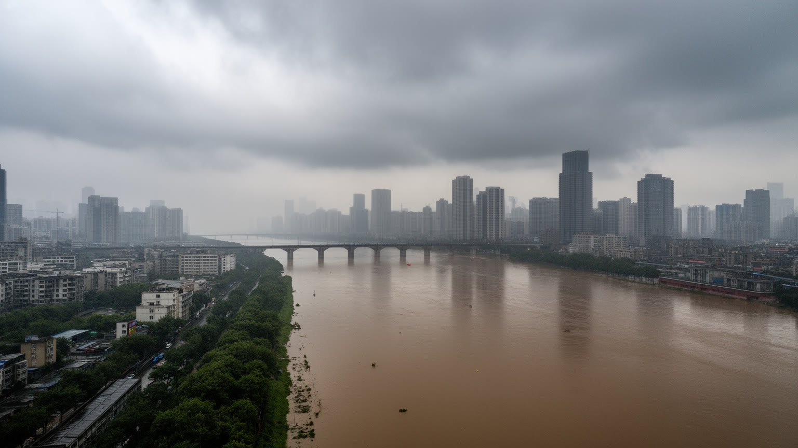
南京の気候は湿潤な亜熱帯性で、夏の蒸し暑さと梅雨期の雨が生活を大きく左右します。内陸の熱と長江沿いの湿気が重なるため、真夏の街路、工場、建設現場、配達、屋外観光は身体に強い負担をかけます。冬は北風と湿った寒さが入り、同じ華東でも季節の差がはっきりしています。長江と秦淮河、玄武湖、低地の排水網を持つ南京では、豪雨時の内水氾濫、河川水位、地下空間の浸水、交通の乱れが重要な都市リスクになります。堤防、ポンプ、雨水管、貯留施設、警報、避難、学校や病院の対応は、観光案内には見えにくいが生活の安全を支えます。気候変動によって極端な雨や暑熱が強まれば、高齢者、低所得世帯、屋外労働者、古い住宅地ほど影響を受けやすいです。南京の美しい並木道や川辺の景観は、同時に水と暑さを管理するインフラでもあります。都市計画は、歴史景観を守るだけでなく、日陰、風通し、排水、冷房負荷、公共避難場所を考えなければなりません。長江は恵みであり、物流の道であり、時に危険な水でもあります。南京の成熟は、この大きな川と湿った気候を日常の備えに変えられるかどうかにかかっています。雨の日の地下道、冠水しやすい交差点、夏の冷房に頼る高層住宅は、気候が抽象的な背景ではなく生活の細部を決める力であることを示しています。備えは市民の習慣として根づく必要がある街です。
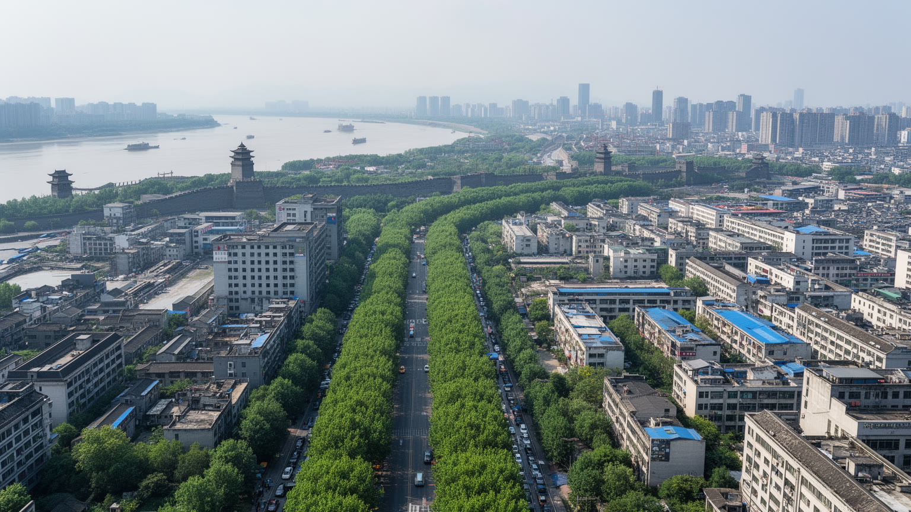
南京を一つの言葉で語れば、長江に面した歴史ある川の首都であり、同時に研究と製造の産業都市です。明代の城壁、民国期の建築、南京大虐殺の追悼、大学のキャンパス、電子製造の開発区、港湾物流、紫金山の緑、塩水鴨の食卓が、同じ都市の中に重なっています。上海のような国際金融都市でも、北京のような現在の政治首都でもありませんが、南京は中国の近代史を理解するうえで避けられない記憶の場所であり、華東の内陸側を支える実務的な中心でもあります。都市の魅力は、古都の落ち着きだけでなく、過去の重さを抱えたまま教育、研究、港湾、住宅を更新している点にあります。旅行者が城壁や秦淮河だけを見れば、南京は美しい歴史都市に見えます。しかし長江の橋、追悼施設の静けさ、大学の図書館、工業団地の通勤、地下鉄の混雑、湿った夏の暑さを重ねると、この都市の現代性が立ち上がります。サッカー観戦の店、湖畔のランナー、新街口の買い物客、夜食の屋台、地元ニュースやSNSを読む高齢者まで含めると、南京はより立体的になります。南京を読むには、誇りと悲しみ、記憶と産業、観光と日常を分けずに見る必要があります。川の流れは過去を洗い流すのではなく、都市が何度も役割を変えながら生き続ける時間を運んでいます。城門、大学、港、食堂をつなぐと、歴史ある中国の川の都市が今も更新されていることが分かります。その重層性こそ南京の核心です。